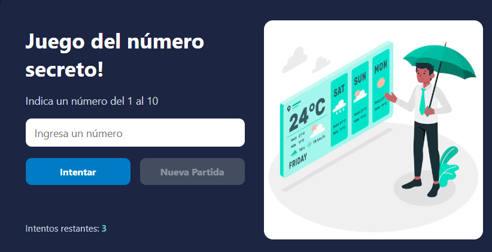

Los Peligros Del Tabaco
Material educativo para estudiantes sobre riesgos del tabaco.
Acceder al blog del examen parcialMatrícula: 16-SIST-2-005
Apasionado por la salud pública, la educación y el desarrollo web. Me especializo en proyectos que combinan tecnología y comunicación para generar impacto social.
Nombre: Jeomar Reyes
Matrícula: 16-SIST-2-005
Formación: Ingenieria en Sistemas
Resumen profesional: Experiencia en campañas de prevención, redacción de contenidos educativos y desarrollo de sitios web informativos. Interés en investigación y comunicación para la salud.
Habilidades: HTML, CSS, JavaScript básico; redacción científica; diseño de materiales educativos; trabajo en equipo.
Material educativo para estudiantes sobre riesgos del tabaco.
Acceder al blog del examen parcial
Nuestro Juego De Número Magico.
Ver proyectoEmail: ultrajeo@gmail.com
Formulario: formulario